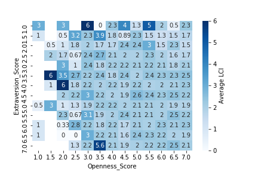
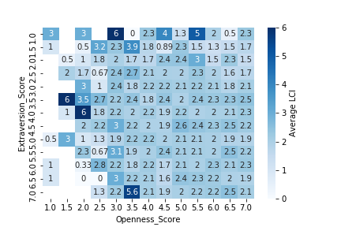

Til Death Do Us
Chart
 Scott Mcalister
Scott Mcalister
 Thomas Oldfield
Thomas Oldfield
 Heather Rodney
Heather Rodney
 Brian Rotolo
Brian Rotolo
 Elizabeth Yim
Elizabeth Yim
Background
This project utilizes data from the National Longitudinal Survey of Youth 1997, sponsored by the U.S. Bureau of Labor Statistics. This study was dedicated to tracking the labor market and other life experiences of American men and women.
The 1997 study was chosen over the 1979 study because it is closer (and therefore more relevant) to the ages of the majority of our classmates. The 1997 study also included variables that were of interest, like subjects’ cohabitation.
We utilized Pandas, MatPlotLib, and Plotly to explore the data and determine the needs and focus of our model. This allowed us to visualize the potential relationships between certain variables, as you will see below.
The LCI is a measure of the objective chaos of a subject’s love life throughout the study. The more changes in your relationship/marital status, the higher your LCI. To create the LCI feature, we looked at reported marital status over the span of the study. The specific interview question used in the study was “Respondent's marital status in this month in [1994-2016]” and was recorded every month after the subject’s fourteenth birthday. There were six possible responses:
- Never Married, Not Cohabitating
- Never Married, Cohabitating
- Married
- Legally Separated
- Divorced
- Widowed
The LCI was designed to start at zero for each subject and then increase or decrease according to any change in response to the research question. All but two changes result in an increase by one point. The first exception is the change from “Never Married, Cohabitating” to “Married,” which we determined would not increase a subject’s chaos and therefore does not change the LCI. The second exception is the change from “Married” to “Divorced,” which increases the LCI by two points. After the survey subjects’ LCIs were calculated, we created scoring divisions to categorize LCIs into final, qualitative measurements:
- Sad and Alone (SA)
- Happily Married (HM)
- It’s About the Journey (AJ)
- Train Wreck (TW)
After defining the LCI, we created a predictive model to predict LCI based on life events. To find the variables that would be the most predictive, we created a simple model that evaluated a single variable. The model was then iterated to loop through each interview question in the longitudinal study to determine the interview questions that most affected LCI. Click here [ACCORDION FOR TABLE] to see the interview questions and our commentary. Then, continue below to calculate your LCI based on your life events, using our predictive model.
Exploration
weight gain/loss after divorce
ice cream preference
marijuana use vs marital status
our ratings vs. how subject rated their own lives (both initial rating and final rating) -> are divorced people happier than we expected? is there a difference between genders?
a map that shows how each quadrant did overall (more specific location identifiers were purposely removed from data) with colorcoded key for SA/HM/TW/GE
Machine Learning
machine learningVisualizations

 


Calculate your LCI
Describe your relationship to your parents in home, 2002How many times were you arrested by age 23?
Deliquency score? Never, seldom, sometimes, often
Time it took to take the interview (how do we measure this? I have no idea....)
Substance use by age 17? yes/no
How many miles away does your data live?
When I was in school, I used to break the rules regularly
How often were you depressed in the last month?
How many of your peers belong to a gang?
Conclusions
Conclusions here.error sources
designer babies
Significant Outliers
Mr. 8045lci 16